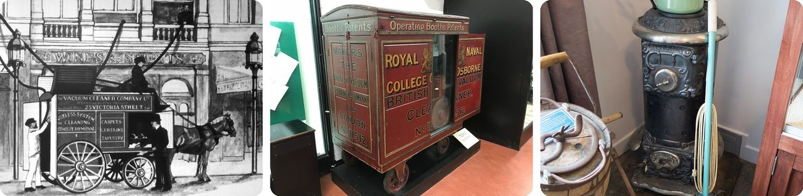
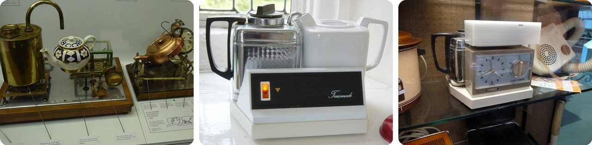

🌍 十大 家用电器的离谱糗事
2026年11月18日
1. 🇺🇸 微波炉是因为一块化掉的巧克力棒被发现的
 1945年，雷神公司一位自学成才的工程师珀西·斯潘塞，在一台正在运转的雷达旁边干活。他发现口袋里的巧克力棒化掉了。
1945年，雷神公司一位自学成才的工程师珀西·斯潘塞，在一台正在运转的雷达旁边干活。他发现口袋里的巧克力棒化掉了。
他想弄明白为什么，就特意用微波去照食物。他煮的第一样东西是爆米花，第二样是一个鸡蛋，结果鸡蛋在一位做实验的人脸上炸开了。
第一台上市卖的微波炉是1947年的Radarange，大约1.8米（5英尺11英寸）高，重340公斤（750磅），差不多和一架三角钢琴一样重。雷神公司一直在改进它，所以一开始是以每天5美元的价格租给酒店和餐馆，而不是直接卖。
这是一件从一块毁掉的零食开始的厨房电器。
2. 🇦🇺 一台微波炉骗得天文学家追了好多年“太空信号”
 在澳大利亚的帕克斯天文台，一台巨大的射电望远镜一直收到一些很短的信号，看起来很像快速射电暴，也就是从遥远太空传来的神秘闪光。翻查旧记录发现，1998年到2015年间一共有46次这样的假信号。
在澳大利亚的帕克斯天文台，一台巨大的射电望远镜一直收到一些很短的信号，看起来很像快速射电暴，也就是从遥远太空传来的神秘闪光。翻查旧记录发现，1998年到2015年间一共有46次这样的假信号。
天文学家给它们起了个外号叫“佩利冬”，名字来自一种虚构的、影子是人形的带翅膀的鹿，因为这些信号看起来像是人造的。2015年，他们终于抓到了“元凶”：天文台里有人在计时还没结束时就打开了微波炉的门。
微波炉门提前打开时，它在关机的一瞬间会发出一声短短的无线电“啾”。惹祸的两台微波炉都用了27年以上，提前开门的时候，大约有一半的次数会制造出假信号。
说白了，这个太空之谜，其实就是有人等不及吃午饭。
3. 🏴 世界上第一个网络摄像头，拍的是一壶咖啡
 1991年，剑桥大学计算机实验室的研究人员受够了大老远走到特洛伊房间，却发现咖啡壶是空的。于是其中两个人把一台摄像头对准咖啡壶，把画面传到每个人的电脑上。
1991年，剑桥大学计算机实验室的研究人员受够了大老远走到特洛伊房间，却发现咖啡壶是空的。于是其中两个人把一台摄像头对准咖啡壶，把画面传到每个人的电脑上。
画面特别小，只有128×128个灰色的点，放在今天的屏幕上比一张邮票还小。1993年，它被放上了万维网，全世界的人都开始看英国的一壶咖啡。
这台摄像头在2001年关掉了，《华盛顿邮报》等报纸都报道了这件事。后来其中一台咖啡机在eBay上卖出了3,350英镑。
换句话说，第一个网络摄像头的大任务，就是帮人少白跑一趟。
4. 🇬🇧 英国电视一插广告，电网就因为水壶紧张起来
 在英国，热门电视节目一插广告，几百万人就会同时起身去烧水泡茶。这叫电视用电高峰（TV pickup），而且英国的电水壶功率很大，每个用电2.5到3千瓦。
在英国，热门电视节目一插广告，几百万人就会同时起身去烧水泡茶。这叫电视用电高峰（TV pickup），而且英国的电水壶功率很大，每个用电2.5到3千瓦。
一次普通的高峰，会在一瞬间多出200到400兆瓦的用电。史上最大的一次出现在1990年7月4日，英格兰在世界杯点球大战中输给西德之后：2,800兆瓦。
电网会提前做好准备。威尔士的迪诺威格发电站把能量存成山上湖里的水，让水冲下来，只要12秒就能送出1,320兆瓦的电。
可以把它想成全国人一起冲马桶，只不过冲的是茶。
5. 🇬🇧 吸尘器的发明者因为吸走了银粉被逮捕

1901年，英国工程师休伯特·塞西尔·布斯看到一台把椅子上的灰吹走的机器，心想：为什么不把灰吸走呢？他做了个实验：在餐馆椅子上放一块手帕，用嘴隔着手帕吸灰。他做出来的机器外号叫“喷气比利”，大到得放在马车上拉着走。工人把车停在楼外，把长长的软管从窗户伸进去，打扫里面。
它也惹了不少麻烦。有人投诉噪音太大，布斯甚至因为吓到了马被罚款。有一次他打扫完造硬币的皇家铸币厂，出门时被抓了，因为他忘了清空机器，里面装满了银粉。他很快就被放了。
说白了，这就是一场用吸尘器不小心犯下的“抢劫”。
6. 🇺🇸 洗碗机的发明，是因为有人的高级碗碟老被磕坏
 约瑟芬·科克伦是芝加哥上流社会的一员。有一次办完晚宴，她家几件祖传的碗碟在清洗时被磕坏了。她觉得，机器肯定能洗得更好。
约瑟芬·科克伦是芝加哥上流社会的一员。有一次办完晚宴，她家几件祖传的碗碟在清洗时被磕坏了。她觉得，机器肯定能洗得更好。
她量了自家碗碟的尺寸，做出正好能放盘子、杯子和碟子的金属丝架。架子放在一个铜桶里的轮子上 → 马达带动轮子转 → 热肥皂水从下往上喷，再像雨一样落到碗碟上。这是第一台靠水压而不是刷子来洗碗的洗碗机。
她在1886年12月28日拿到了专利。1893年芝加哥世界博览会上，九台她的机器在餐厅里洗碗，她的公司后来成了KitchenAid的一部分。
这是一整台新机器，就为了保住几个盘子。
7. 🇩🇪 阿尔伯特·爱因斯坦发明过冰箱
 20世纪20年代，柏林的报纸报道说，一家人因为冰箱的密封圈坏了，有毒气体漏进家里，全家都死了。阿尔伯特·爱因斯坦和他以前的学生莱奥·西拉德决定解决这个问题。
20世纪20年代，柏林的报纸报道说，一家人因为冰箱的密封圈坏了，有毒气体漏进家里，全家都死了。阿尔伯特·爱因斯坦和他以前的学生莱奥·西拉德决定解决这个问题。
他们的想法是：做一台没有活动零件的冰箱，这样就没有会磨坏的密封圈。它只需要一个热源和三种液体：水、氨和丁烷。1926年到1934年间，他们在六个国家拿到了45项专利。
可它不如别的冰箱省电，后来又出现了更安全的制冷气体。两人卖掉的专利只赚了750美元，大约相当于今天的10,000美元。
换句话说，历史上最伟大的科学家之一，也试过修好家里的冰箱。
8. 🇺🇸 一家搅拌机公司靠搅碎手机出了名
 搅拌机公司Blendtec的创始人汤姆·迪克森，有一次做实验搅碎了一盒火柴。这促成了一个视频系列，每集开头他都会说：“能搅碎吗？这是个问题。”
搅拌机公司Blendtec的创始人汤姆·迪克森，有一次做实验搅碎了一盒火柴。这促成了一个视频系列，每集开头他都会说：“能搅碎吗？这是个问题。”
他搅过iPad、iPhone 4，还有“可乐鸡”：半只熟鸡加一罐可口可乐，连骨头一起搅（不能吃）。
2007年，他搅碎了一台摄像机。之后，视频团队想把剩下的残骸拿到电器商店百思买去退货，结果没退成。
这是一档烹饪节目，只不过菜谱是你的手机。
9. 🍞 烤面包机比大多数人更早上网
 1990年，计算机科学家约翰·罗姆基和西蒙·哈克特把一台烤面包机连上了互联网，让它成了第一台能在网上控制的家电。那时候大多数家庭还没有网。
1990年，计算机科学家约翰·罗姆基和西蒙·哈克特把一台烤面包机连上了互联网，让它成了第一台能在网上控制的家电。那时候大多数家庭还没有网。
烤面包机的点子越来越离谱。2001年，英国布鲁内尔大学的一位设计师做了一台烤面包机，它会打电话查天气，再把“晴”或“多云”的图案烤在面包上。
后来，一台会用推特的烤面包机，成了“物联网”的早期例子，也就是让日常物品跟互联网对话的想法。
可以把它想成一顿会查邮件的早餐。
10. 🇬🇧 一台泡茶闹钟的名字，因为一条河被拒绝了

Teasmade是一种放在床头的闹钟，还能顺便泡茶，你一醒来就有热茶喝。1902年，伯明翰一位叫弗兰克·克拉克的枪匠为它申请了专利，卖的时候叫“会泡茶的钟！”。1932年，乔治·阿布索隆发明了一台电动的，想注册“Teesmade”这个名字。专利局拒绝了，因为它不是在蒂斯河边做的，这个名字可能会让人搞混。
后来，Goblin Teasmade火了，卖它的公司正是从布斯的吸尘器生意发展起来的。Teasmade在20世纪60年代和70年代最流行，在皇后乐队《I Want to Break Free》的音乐录影带里，它还叫醒了布莱恩·梅。
这是一个用一杯茶把你哄下床的闹钟。
趣闻
特洛伊房间的咖啡壶，还启发了一个至今藏在互联网里的玩笑。1998年愚人节，一个正经的互联网标准组织发布了一套在网上控制咖啡壶的规则，里面有一个错误代码418：“我是一个茶壶。”2017年，有官员想把它从热门软件里删掉，一个15岁的少年发起了“拯救418”运动，结果赢了。这让人好奇：还有哪些愚人节玩笑，最后变成了真的？
图片来源（Wikimedia Commons）
- #1: Raytheon RadaRange NS Savannah MD1.jpg by Acroterion, CC BY-SA 4.0
- #1: Amana Radarange Microwave Oven.jpg by TaurusEmerald, CC BY-SA 4.0
- #1: Tappan Model RL-1 Microwave Oven (smithsonian_american_history_museum) by Raytheon Manufacturing Co. and Tappan, CC0
- #2: CSIRO Parkes Radio Telescope (flickr) by amandabhslater, CC BY-SA 2.0
- #2: CSIRO ScienceImage 4350 CSIROs Parkes Radio Telescope with moon in the background.jpg by division, CSIRO, CC BY 3.0
- #2: CSIRO Parkes Radio Telescope (flickr) by amandabhslater, CC BY-SA 2.0
- #3: Trojan Room Coffee Pot (x1.jpg).jpg by Daniel Gordon, Martyn Johnson and Quentin Stafford-Fraser, CC BY-SA 3.0
- #3: Trojan Room coffee pot xcoffee.png by Quentin Stafford-Fraser, CC BY-SA 3.0
- #3: Trojan Room coffee pot xvcoffee.jpeg by Daniel Gordon, Martyn Johnson and Quentin Stafford-Fraser, CC BY-SA 3.0
- #4: Electric kettle phillips white.JPG by Rafa, Public domain
- #4: Dinorwig pumped hydro Power Station at Slate Quarry near Llanberis (flickr) by John Englart (Takver), CC BY-SA 2.0
- #4: General electric - electric water kettle.jpg by Cantons-de-l'Est, CC BY-SA 4.0
- #5: Hubert Cecil Booth Straßenstaubsauger von 1901.jpg by Unknown authorUnknown author, Public domain
- #5: Booth's vacuum cleaner, Science Museum, London.jpg by Matt Brown, CC BY 2.0
- #5: Antique vacuum cleaner and woodstove (flickr) by quinet, CC BY 2.0
- #6: Stamps of Romania, 2013-34.jpg by Post of Romania, Public domain
- #6: Dishwasher demonstration 1921.jpg by Unknown authorUnknown author, Public domain
- #6: Lincoln buff set - 1864.jpg by Detweiler, Susan G. (1975). American Presidential China. Washington, D.C.: Smithsonian Institution, p. 46., Public domain
- #7: Einstein Refrigerator pat1781541 clarified.jpg by Einstein/Szilard with annotations by P. Brandon Malloy, Public domain
- #7: Albert Einstein 1921 (cropped).jpg by Harris & Ewing Studio, active 1905 - 1977, CC0
- #7: Leo Szilard.jpg by U.S. Department of Energy, Public domain
- #8: Blendtec Total Blender.jpg by Trebz, CC BY 2.0
- #8: Tom Dickson.jpg by Andrew Baron from NYC, United States, CC BY 2.0
- #8: Will Scoble Blend? No! (flickr) by Robert Scoble, CC BY 2.0
- #9: The Internet Toaster (flickr) by public.resource.org, CC0
- #9: Internet Toaster (flickr) by public.resource.org, CC BY 2.0
- #9: 20200721-FlickrFriday Polished Vintage Toaster (flickr) by C E Andersen, CC BY 2.0
- #10: Early Teasmade - Science Museum London (flickr) by Haydn Blackey, CC BY-SA 2.0
- #10: GoblinTeasmade.jpg by MortimerCat, CC BY-SA 3.0
- #10: Teasmade (flickr) by Simon Harriyott, CC BY 2.0


.jpg){kind=link}


.jpg){kind=link}